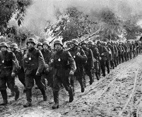
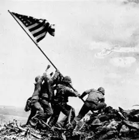
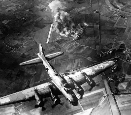
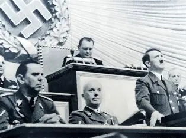
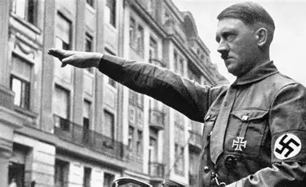
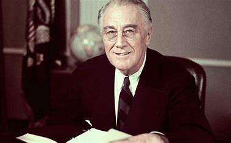
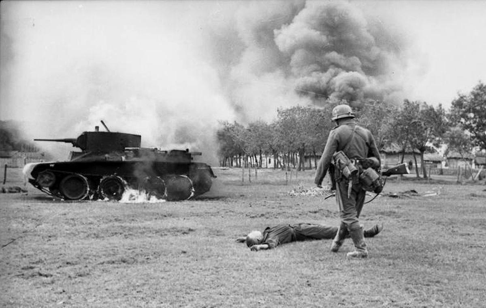
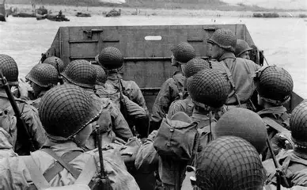
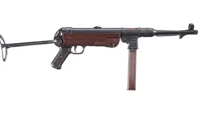

Introdução
"A Segunda Guerra Mundial foi um conflito global que durou de 1939 a 1945, envolvendo a maioria das nações do mundo."




Personagens Principais

Winston Churchill
Primeiro-ministro do Reino Unido durante a maior parte da guerra, conhecido por sua liderança e discursos inspiradores.

Adolf Hitler
Líder da Alemanha nazista, responsável pela invasão de vários países e pelo Holocausto.

Franklin D. Roosevelt
Franklin Delano Roosevelt, também conhecido como FDR, foi um advogado e político norte-americano que serviu como o 32.º presidente dos Estados Unidos de 1933 até sua morte em 1945.
Operações Militares Principais
Operação Barbarossa
Iniciada em 22 de junho de 1941, foi a invasão da União Soviética pela Alemanha nazista, marcando um ponto crucial na guerra.

Dia D
Realizada em 6 de junho de 1944, foi a invasão aliada da Normandia, que marcou o início da libertação da Europa Ocidental.

Equipamentos da Segunda Guerra Mundial

Tanque M4 Sherman
Um dos tanques mais utilizados pelas forças aliadas, conhecido por sua versatilidade e produção em massa.

MP 40
Uma submetralhadora alemã amplamente utilizada pelas tropas nazistas, conhecida por sua eficácia em combate próximo.

B-17 Flying Fortress
Um bombardeiro estratégico americano, famoso por sua resistência e capacidade de carga.
Curiosidades
- A Segunda Guerra Mundial foi o conflito mais mortal da história, com estimativas de 70 a 85 milhões de mortes.
- O código Enigma foi usado pelos alemães para codificar mensagens, e sua quebra pelos aliados foi crucial para a vitória.
- A Batalha de Stalingrado foi um dos pontos de virada da guerra, resultando em uma grande derrota para os alemães.
- O Holocausto resultou na morte de cerca de 6 milhões de judeus e milhões de outras vítimas.